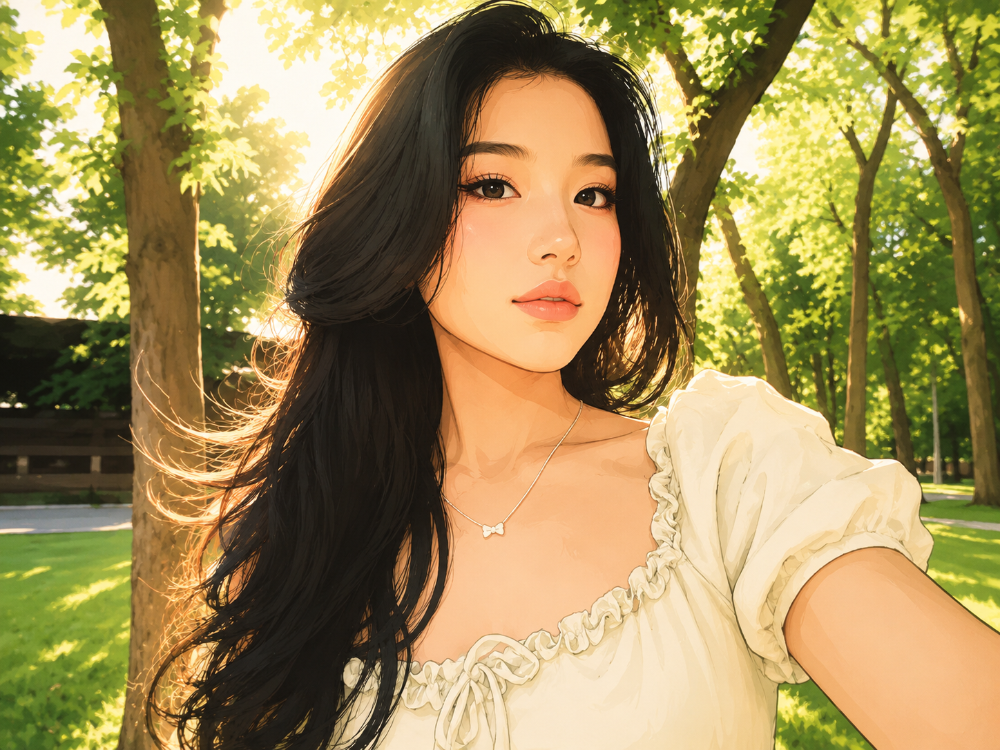
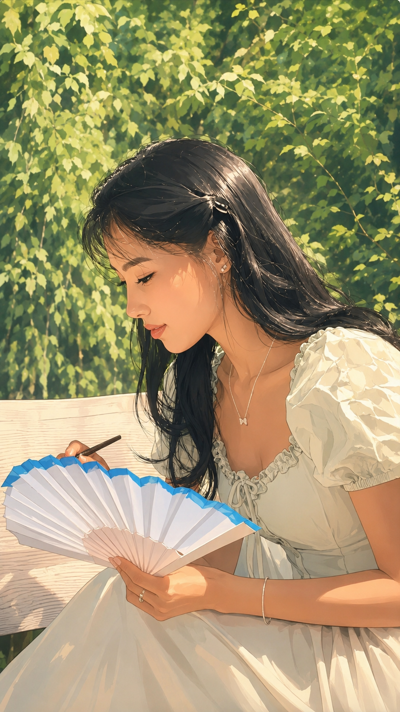

Глава 4
Моё вдохновение
♡
Жаным, сегодня ты сначала была в парке — рисовала и ловила вдохновение, — а потом пошла на работу и занималась с детьми творчеством: вы делали аппликации, оригами и рисовали. И я просто думаю о том, какая ты у меня прекрасная.
♥Ты красивая не только внешне, хотя ты правда невероятно красивая, особенно сегодня в своей розовой футболке. Но ещё красивее ты внутри — в том, как стараешься, как относишься к детям и как умеешь делать что-то доброе и тёплое для других.
♥Ты очень нежная, творческая, добрая и настоящая. Для меня ты сама — вдохновение.